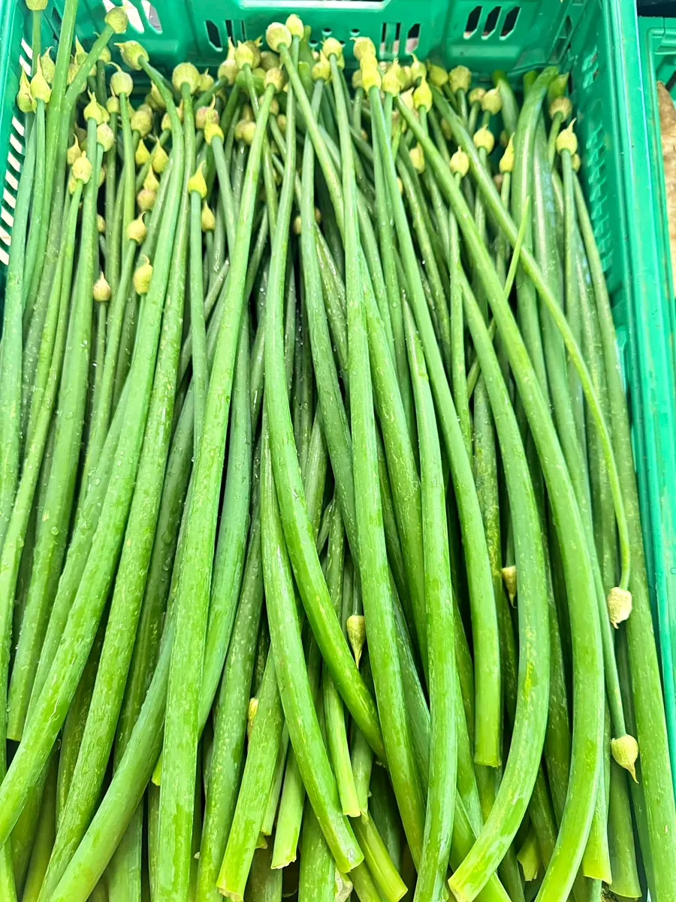
4 novembre 2026
« Fleurs oignons disponible Chez Potin ! »
Les belles tiges vertes et leurs boutons, prêtes pour la marmite.
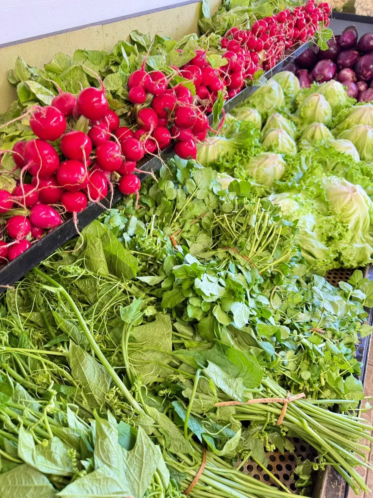
Fruits & Légumes · Épicerie · Saint-Joseph
QualitéFraîcheurPéi
Rue du Maréchal Leclerc, 97480 Saint-Joseph
Le magasin
À Saint-Joseph, Chez Potin réunit sous le même toit les fruits et légumes du moment, une épicerie et bien plus encore. Chaque semaine, les arrivages sont annoncés sur la page du magasin, en photos, dès le matin.
Trois mots guident la maison : qualité, fraîcheur et péi.
Fruits & légumes fraisBrèdes, racines, fruits du moment
ÉpicerieUne large gamme à découvrir
Et bien plus…Jusqu'aux barquettes, en cas de besoin
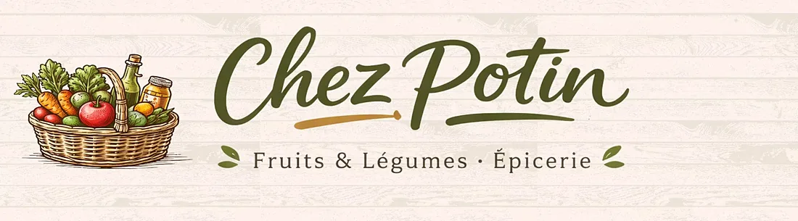
Les arrivages
Les photos publiées par Chez Potin pour son arrivage du 5 novembre 2026 : de la couleur à chaque cagette.
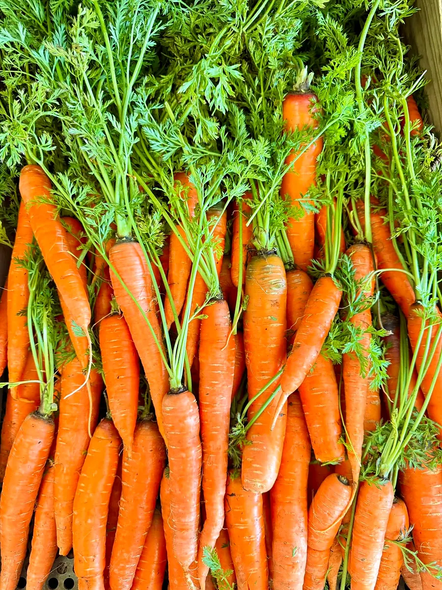
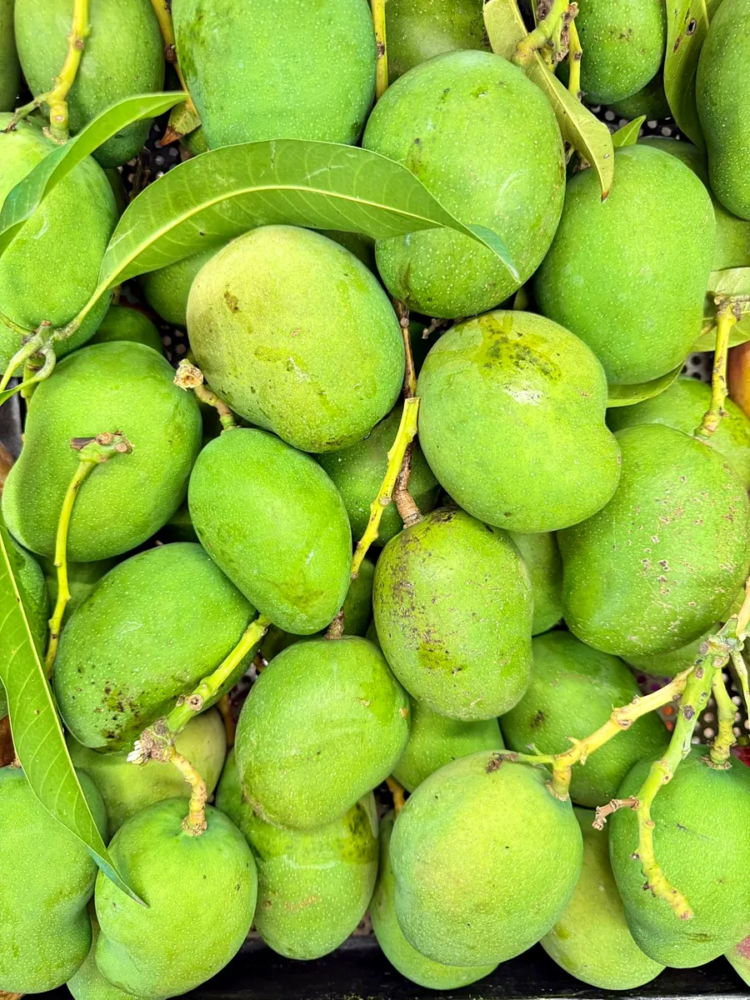
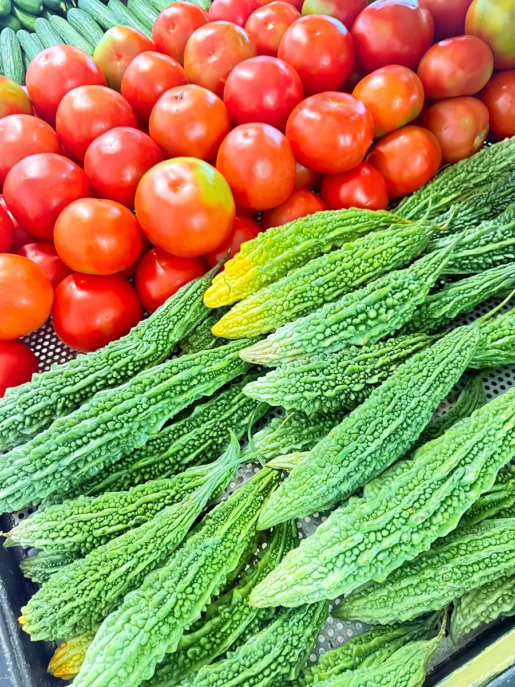
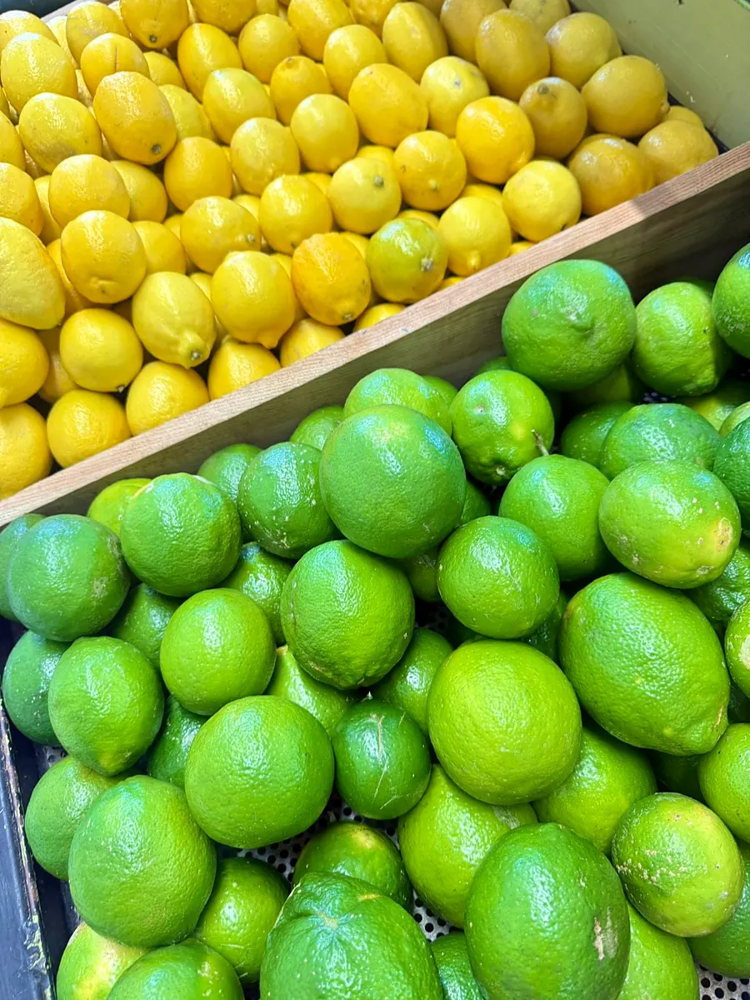
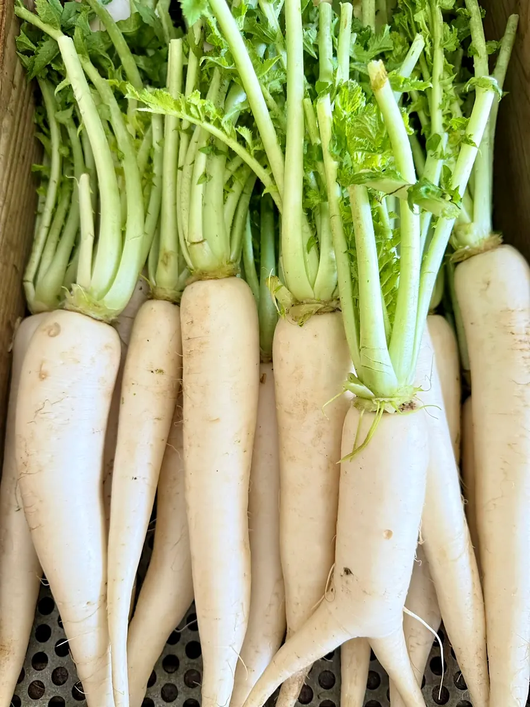
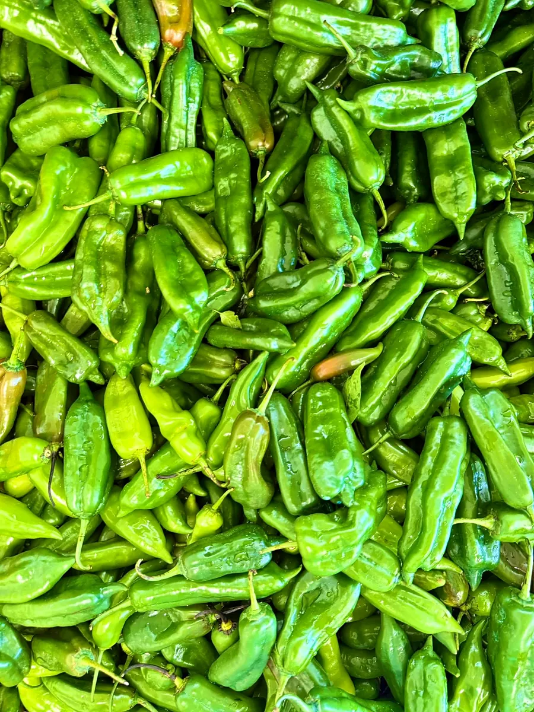
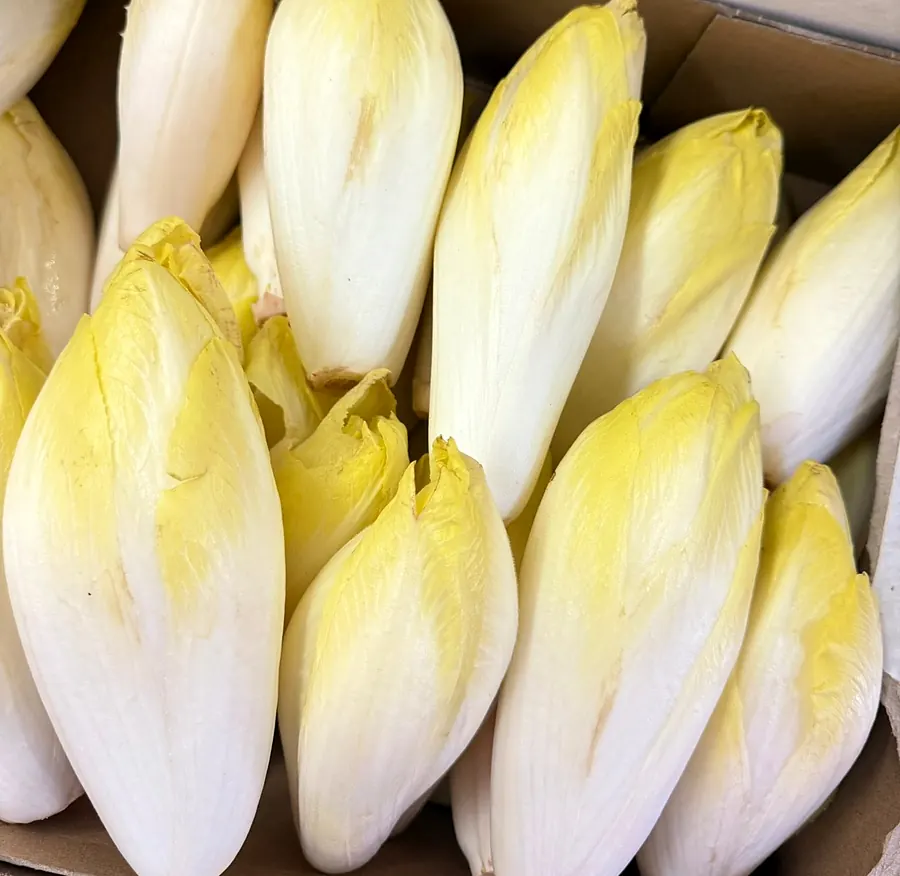
Faites glisser pour voir tout l'arrivage →
« Nos arrivages Chez Potin ! »
Du moment
Repris mot pour mot des publications de Chez Potin.

« Fleurs oignons disponible Chez Potin ! »
Les belles tiges vertes et leurs boutons, prêtes pour la marmite.
« Large variété de brèdes, disponible Chez Potin »
De quoi composer un bon cari brèdes, selon les envies du jour.
« Courgettes rondes, parfaites pour réaliser de délicieuses courgettes farcies ! »
L'idée recette du magasin, à emporter avec le panier.
« Besoin de barquettes ? On a ce qu'il vous faut ! »
Chez Potin pense aussi aux petits à-côtés du quotidien.
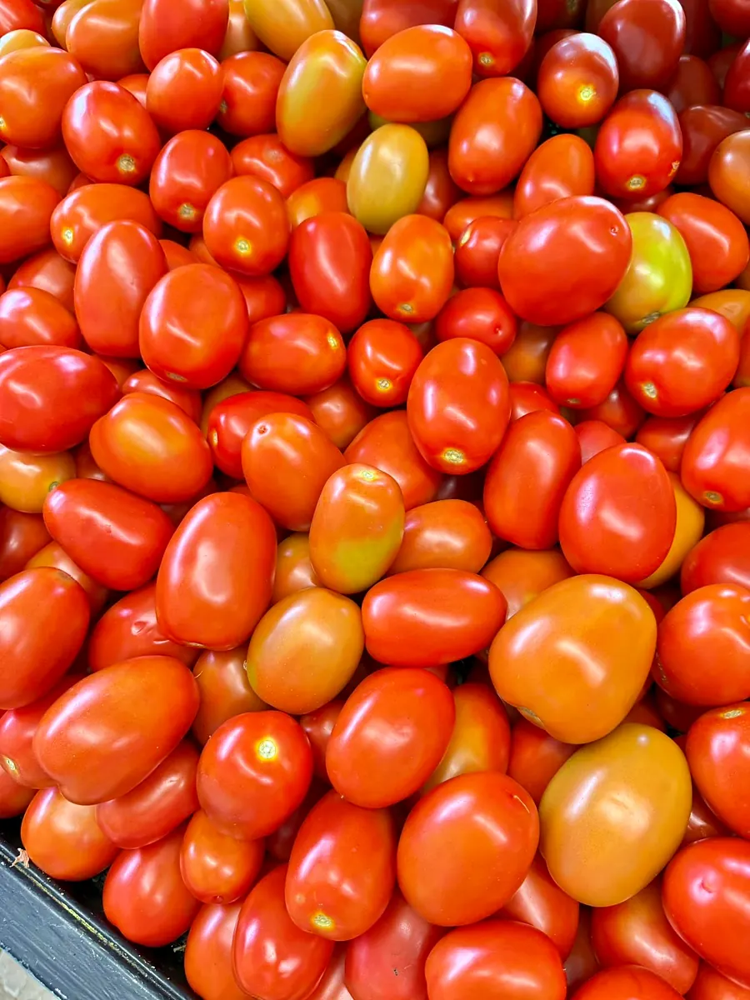
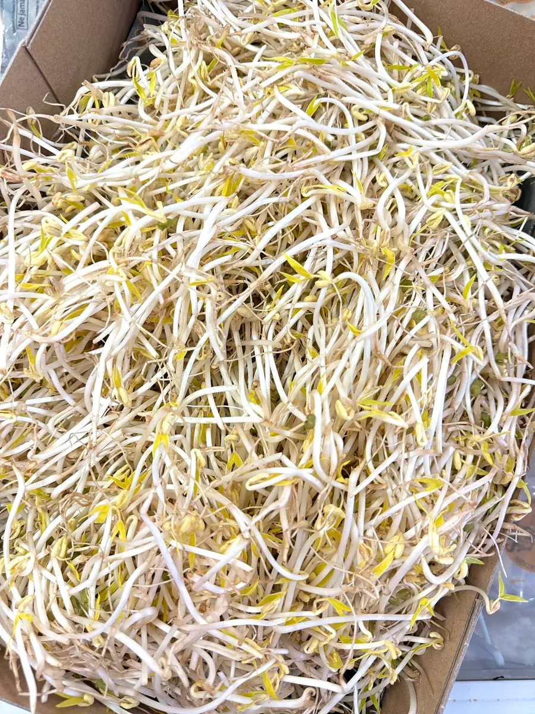
Offrir pour Noël
Pour le repas de Noël ou pour faire plaisir, préparez vos courses de fête avec les fruits, les légumes et l'épicerie du magasin. Dites-nous ce qui vous ferait plaisir, on s'occupe du reste.
Paniers et horaires des fêtes à confirmer avec le magasin.
Venir au magasin
AdresseRue du Maréchal Leclerc, 97480 Saint-Joseph
Ouvrir l'itinéraire
HorairesAnnoncés au fil des semaines sur la page du magasin. Récemment : le samedi en journée continue jusqu'à 18h45, et le mercredi 11 novembre de 7h30 à 12h.
E-mailchezpotin@gmail.com
FacebookFruits et Légumes CHEZ POTIN
Les arrivages du jour, en photos.